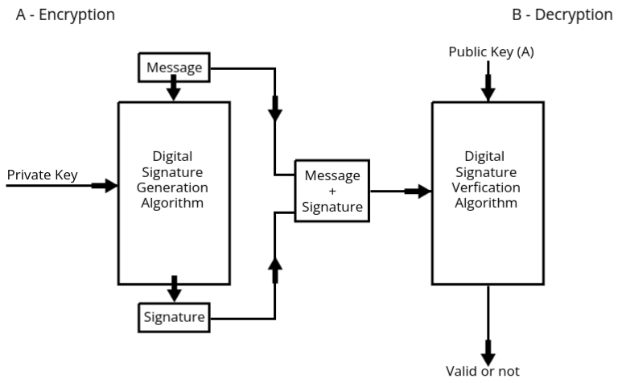

Hash Function
Hash functions are fundamental building blocks in modern cryptography, playing a pivotal role in ensuring
data security, integrity, and authentication across various digital systems. A hash function is a
mathematical algorithm that takes an input, such as a message or file, and produces a fixed-length string of
characters, known as a hash value or digest. This output is unique to the input data; even the slightest
change in the input results in a completely different hash. This property makes hash functions essential for
detecting unauthorized modifications to data, as any tampering becomes immediately apparent through a
mismatch in hash values.
This topic is divided into several important areas for a deeper understanding:
- Message Authentication & Hash Functions: This section focuses on how hash functions are
used to verify the authenticity and integrity of messages, ensuring that they come from a legitimate
source and have not been altered in transit.
- Authentication Requirements: These outline the basic principles needed to establish trust in
communication systems. The primary goals include verifying the sender’s identity, ensuring the
message's content remains intact, and preventing unauthorized access or alterations.
- Authentication Functions: These are specific techniques used to meet authentication
requirements. They often rely on cryptographic methods to ensure that the communication remains
secure and trustworthy.
- Message Authentication Codes (MACs): A MAC is a cryptographic tool that combines a secret key
with the message to generate a code. This code ensures that both the sender and recipient can
verify the message’s authenticity and integrity, as only they possess the key required to
generate or verify the MAC.
- Hash Functions: These are algorithms that provide a unique fingerprint for data. Hash functions
are widely used in systems where data integrity is critical, such as verifying file downloads,
securing passwords, and blockchain technology.
- Security of Hash Functions and MACs: This subtopic addresses potential vulnerabilities in hash
functions and MACs, such as collision attacks (when two different inputs produce the same hash)
and key management issues. It also explores strategies to enhance their robustness against such
threats.
- Specific Hash Algorithms: Two widely recognized hash algorithms are discussed in
detail:
- MD-5 (Message Digest Algorithm 5): This algorithm was once a popular choice for creating 128-bit
hash values. It played a significant role in the early days of cryptography by offering a fast
and efficient way to generate digests. However, its use has significantly declined due to
vulnerabilities, such as susceptibility to collision attacks, making it unsuitable for
high-security applications today.
- Secure Hash Algorithm (SHA-512): A member of the Secure Hash Algorithm family, SHA-512 generates
a 512-bit hash value, offering a much higher level of security compared to older algorithms like
MD-5. It is widely adopted in modern cryptographic applications, including SSL/TLS certificates,
blockchain systems, and digital signatures, where robust data protection is critical.
- Digital Signatures:
Digital signatures are advanced cryptographic tools used to verify the authenticity and integrity of
messages or digital documents. They are the digital equivalent of handwritten signatures, providing a
secure method for validating the identity of the sender and the originality of the data.
- Digital Signature Standard (DSS): This standard defines the framework for implementing secure
digital signature schemes, ensuring consistency and reliability across different systems. It
forms the basis for many digital signature protocols used today.
- Authentication Protocol: This refers to the specific steps and procedures involved in using
digital signatures to validate the identity of a sender during communication. Authentication
protocols are critical in scenarios like secure email communication, online transactions, and
digital contract signing.
- Digital Signature Algorithm (DSA): DSA is a widely used cryptographic algorithm for creating
digital signatures. It ensures that the signature is unique to the message and can be verified
by the recipient without compromising security. DSA plays a crucial role in maintaining trust in
digital interactions.
Message Authentication
- Message authentication is the process of verifying the identity of the sender and ensuring the
integrity of the message.
- For example, if you work in Organization XYZ and receive a message from someone in Organization ABC,
you need to verify that the message actually came from that person in ABC and was not altered during
transmission.
- Message authentication is crucial for preventing unauthorized access or tampering of sensitive
information.
- How is this done? Through an authenticator, which can be a number, a hash code, an alphabetic
string, or an alphanumeric string.
- These authenticators are generated by an authentication function to ensure both message integrity
and sender authenticity.
- There are three main types of authentication functions:
- Message Encryption
- Message Authentication Code (MAC)
- Hash Functions (H)
Message Encryption
- Encryption is the process of converting plaintext into ciphertext using an encryption algorithm
and a secret key.
- In the context of message authentication, the encrypted message (ciphertext) serves as proof of
authenticity, as only the intended recipient (who has the decryption key) can read the message.
- This method ensures that even if the message is intercepted, an attacker cannot read it without
the decryption key, which can be used as an authenticator.
- However, message encryption alone does not verify the source of the message, which is why
additional methods like MAC and hash functions are used for complete message authentication.
Message Authentication Code (MAC)
- A Message Authentication Code (MAC) is a fixed-length code generated by an authentication
function, which takes the message and a secret key as inputs.
- The MAC ensures both the integrity and authenticity of the message. If the message changes
during transmission, the MAC will not match when verified by the recipient.
- The formula for a MAC is as follows:
C(MK) = MAC, where:
- C represents the authentication function.
- M is the message being sent.
- K is the secret key shared between the sender and receiver.
- The output (o/p) is the MAC code, which acts as a "signature" for the
message.
- MACs are commonly used in various security protocols like SSL/TLS to verify the authenticity and
integrity of transmitted messages.
Hash Functions (H)
- Hash functions are similar to MACs but do not use a secret key. Instead, they take the message
and produce a fixed-length hash code.
- The output of a hash function is typically referred to as the hash value or hash code.
- The formula for a hash function is as follows:
H(M) = h, where:
- H represents the hash function.
- M is the message being sent.
- h is the resulting hash code, a fixed-length string representing the
message.
- The hash code serves as a fingerprint for the message. Even a small change in the message will
result in a completely different hash code, making it easy to detect any tampering.
- Hash functions are widely used in digital signatures, blockchain technologies, and various
security protocols to ensure data integrity.
Comparison of Authentication Functions
- Message Encryption provides confidentiality but does not authenticate the
sender. It ensures that only the intended recipient can read the message.
- MAC offers both authenticity and integrity. It ensures that the message has not
been altered and that it was sent by the claimed sender, provided the secret key remains secure.
- Hash Functions ensure message integrity by producing a unique hash value for a
given message. They cannot verify the sender's identity unless combined with digital signatures
or other forms of authentication.
Hash Algorithms
MD-5 (Message Digest Algorithm 5)
-
MD5 is a widely used cryptographic hash function that produces a 128-bit (16-byte) hash value.
It is
primarily used for verifying data integrity and generating checksums for data comparison.
- Developed by Ron Rivest in 1991 as an improvement over previous hash functions like MD4.
- It is fast, making it ideal for applications requiring quick hashing, but it produces a 128-bit
message digest, which is relatively short by modern standards.
- Although MD5 is still used in some contexts, it is no longer considered secure against collision
attacks due to vulnerabilities discovered over time. However, it is still widely used for file
integrity checks and basic hashing tasks.
Working Steps:
-
Padding the Message:
The first step is to adjust the message length so it fits MD5’s requirements. Extra bits
(padding) are added to the message to make its total length a multiple of 512 bits (minus 64
bits reserved for the next step). This ensures MD5 can process the message properly.
-
Adding the Original Length:
Once padding is done, the original length of the message (before padding) is added at the
end in a 64-bit binary format. This helps MD5 keep track of the actual length of the
original input.
-
Breaking into 512-bit Blocks:
The padded message, along with the added length, is split into chunks of 512 bits. These
blocks are processed one by one.
-
Setting Up Variables:
MD5 uses four predefined variables (A, B, C, D) to store intermediate results. These
variables start with specific values and are updated during processing.
-
Processing Each Block:
Each 512-bit block goes through the following steps:
- Split into 16 smaller pieces (32 bits each).
- Processed in four rounds of calculations that mix and transform the data using
mathematical and logical operations.
- After processing, the results are added to the initial values of A, B, C, and D,
updating them for the next block.
-
Producing the Final Hash:
After all blocks are processed, the final values of A, B, C, and D are combined to create a
128-bit hash. This hash is then represented as a 32-character hexadecimal string.
Key Takeaway: The MD5 hash is like a digital fingerprint of the input.
Even a tiny change in the input creates a completely different hash, making it unique and
secure for verification purposes.
SHA (Secure Hash Algorithm)
- Modified Version of MD5: SHA is an improved version of the MD5 algorithm, designed to address MD5's vulnerabilities and provide more security. Considering some of MD5's weaknesses, such as collision attacks, SHA was developed to be more secure and reliable. When MD5 was considered unsafe against collision attacks, the use of SHA increased.
- Output Length: Compared to MD5, which produces only a 128-bit output, SHA produces a 160-bit output. This means that SHA's hash is more complex and harder to reverse-engineer. Due to the increased number of bits, more secure variants like sha256 (a version of SHA) and sha512 exist, which produce even more bits and are used for highly sensitive data.
Working Steps:
-
Padding the Message:
Padding is added to the message so that its length is 64 bits less than a multiple of 512.
This is done by first adding a "1" bit, followed by enough "0" bits to reach the required
length.
-
Adding the Original Length:
The original length of the message (before padding) is added as a 64-bit value to the end of
the message. This ensures that the final message length is a perfect multiple of 512 bits.
-
Dividing the Message into 512-bit Blocks:
The padded message is split into 512-bit blocks. These blocks are processed one by one
during the hashing process.
-
Initializing Chaining Variables:
SHA uses five 32-bit variables (A, B, C, D, and E) to keep track of the calculation. These
variables are initialized with specific starting values.
-
Processing Each Block:
Each 512-bit block goes through these steps:
- Copy Variables: The current values of A, B, C, D, and E are copied
into temporary variables (a, b, c, d, e).
- Divide into Words: The block is split into 16 smaller 32-bit pieces
(W₀ to W₁₅). Then, more words (W₁₆ to W₇₉) are generated using operations on the
initial words.
- Perform Four Rounds: There are four rounds of operations on the
words, each consisting of 20 steps. Each round involves applying functions, adding
constants, and modifying the variables:
- Round 1: Basic logical operations like AND, OR, and NOT.
- Round 2: More complex operations, including XOR.
- Round 3: Further transformations to mix the data.
- Round 4: Final operations to ensure the data is well-mixed.
- Update Variables: After the block is processed, the temporary
variables (a, b, c, d, e) are added back to the original variables (A, B, C, D, E),
incorporating the changes.
-
Final Output:
After all the blocks have been processed, the final values of A, B, C, D, and E are
concatenated to produce the final 160-bit hash value. This hash is typically represented as
a 40-character hexadecimal string, which serves as a unique identifier for the original
message.
Digital Signature
- Real-World Relevance: You’ve probably come across digital signatures in everyday life, especially when you're signing documents online, making secure transactions, or authenticating yourself for various services. They play an important role in ensuring that everything is secure and trustworthy in the digital world.
- Based on Asymmetric Key Cryptography: Digital signatures are built on something called asymmetric key cryptography. This means they use two different keys: one private key, which you keep secret, and one public key, which is shared with others. The private key is used for signing messages, and the public key is used to check if the signature is valid.
- Encryption and Decryption:
- Encryption: To create a digital signature, the private key is used to "sign" the message. Think of it like putting your signature on a paper document—this helps prove that the message came from you.
- Decryption: On the other side, the public key is used to verify the digital signature. This step checks if the message was really signed by the private key holder and if it hasn’t been altered in any way.
- Primary Uses: Digital signatures are mainly used for two things:
- Authentication: It helps make sure that the message you’re receiving actually came from the person or entity it claims to be from. This ensures the sender’s identity is verified.
- Non-Repudiation: Once a message is signed, the sender cannot deny having sent it. In other words, they can’t say later that they didn’t sign the message—this makes the process more trustworthy.
- Signature: A digital signature acts like proof of identity. It helps to confirm that the message really came from the person who is claimed to have sent it, just like how a handwritten signature works on paper to verify identity.
Working of Digital Signature

- Sender's End (Encryption):
- The sender (User A) uses their private key to encrypt the message. This
private key is unique to the sender and remains confidential.
- The message and private key are passed through a Digital Signature Generation
Algorithm, which produces the digital signature.
- The generated digital signature is then combined with the original message, creating a
package containing both.
- This package (message + signature) is sent to the receiver (User B).
- Receiver's End (Decryption):
- The receiver uses the sender's public key to decrypt and verify the
digital signature.
- The package (message + signature) is passed through a Digital Signature
Verification Algorithm, along with the sender's public key.
- The algorithm compares the received message with the digital signature to verify its
validity:
- If the message matches the signature: The algorithm outputs
Valid, confirming the sender's authenticity and message
integrity.
- If the message does not match the signature: The algorithm outputs Not
Valid, indicating potential tampering or authenticity issues.
Digital Signature Standard (DSS)
- Definition: The Digital Signature Standard (DSS) is a Federal Information
Processing Standard (FIPS) specifying algorithms for digital signature generation and
verification, primarily for ensuring data authenticity and integrity.
- Established By: National Institute of Standards and Technology (NIST).
- First Published: 1994 as FIPS PUB 186.
- Purpose: Provides a secure method for digital signatures using public-key
cryptography to authenticate the origin and integrity of digital data.
Key Features of DSS
- Algorithm: DSS defines the Digital Signature Algorithm (DSA) as its core
mechanism for generating and verifying digital signatures.
- Ensures signatures are unique for each document, preventing forgery.
- Does not encrypt data, only authenticates and verifies its integrity.
- Uses hash functions (e.g., SHA-1, SHA-256) to generate a message digest.
- Works with public-key cryptography, involving a pair of private and public keys.
Working of DSS
- Key Generation:
- Generate a private key (x) and compute the corresponding public key
(y).
- These keys are derived using the DSA algorithm parameters, including a prime number
(p), a subprime (q), and a generator (g).
- Signature Generation:
- Hash the message to produce a fixed-length message digest.
- Generate a random integer (k) and calculate two values:
- r = (gk mod p) mod q.
- s = (k-1 (H(m) + xr)) mod q, where
H(m) is the message hash.
- The signature is the pair (r, s).
- Signature Verification:
- Receiver uses the sender’s public key to verify the signature:
- Calculate the hash of the received message.
- Compute:
- w = s-1 mod q.
- u1 = (H(m)w) mod q, u2 =
(rw) mod q.
- v = (gu1 * yu2 mod p) mod
q.
- If v equals r, the signature is valid.
Advantages of DSS
- Ensures data authenticity and integrity without encrypting the data.
- Relies on well-established mathematical principles for security.
- Efficient for signing and verifying large amounts of data.
Applications of DSS
- Used in secure email systems (e.g., S/MIME, PGP).
- Verifies authenticity in software distribution and updates.
- Commonly used in Public Key Infrastructure (PKI) systems for certificates.
- Ensures secure communications in blockchain and financial transactions.
Authentication Protocol
- Definition: A set of rules and processes used to verify the identity of
entities (users, systems, or devices) communicating in a network.
- Purpose: Ensures secure access and communication by confirming the legitimacy
of the participating entities.
- Key Features:
- Prevents unauthorized access.
- Guards against impersonation and replay attacks.
- Maintains confidentiality and integrity of communication.
Types of Authentication Protocols
- Password-Based:
- Relies on shared passwords or passphrases.
- Vulnerable to dictionary attacks and password theft.
- Challenge-Response Protocol:
- Uses a challenge (e.g., random number) and a secret key to verify identity.
- Prevents replay attacks as each session has a unique challenge.
- Token-Based:
- Utilizes physical or digital tokens for authentication.
- Examples: OTP (One-Time Password) tokens, smart cards.
- Biometric-Based:
- Involves unique biological traits (e.g., fingerprints, retina scans).
- Provides strong security but can be costly to implement.
Examples of Authentication Protocols
- Kerberos: A network authentication protocol using secret-key cryptography
and a trusted third party for secure communication.
- OAuth: A protocol for token-based authentication in web applications,
allowing third-party access without sharing credentials.
- SSL/TLS Handshake: Verifies the server and optionally the client during
secure web connections.
- RADIUS: Centralized authentication and authorization protocol for network
access.
Digital Signature Algorithm (DSA)
- Definition: A Federal Information Processing Standard (FIPS) for digital
signatures, introduced by the National Institute of Standards and Technology (NIST) in 1991.
- Purpose: Ensures data authenticity and integrity by providing a secure digital
signature mechanism.
- Based On: Public key cryptography and modular arithmetic, similar to the
discrete logarithm problem.
Key Features of DSA
- Used exclusively for generating and verifying digital signatures, not for encrypting data.
- Generates a pair of keys: private key (used for signing) and public key (used for
verification).
- Produces a unique signature for every message, even if the same private key is used.
- Relies on mathematical properties to ensure security and prevent forgery.
Working of DSA
- Key Generation:
- Choose a prime number p and a number q (a prime divisor of
p-1).
- Generate a number g, a generator of the subgroup of p.
- Generate private key x (random number less than q).
- Compute public key y = g^x mod p.
- Signing Process:
- Generate a random integer k (less than q).
- Compute r = (g^k mod p) mod q.
- Compute s = (k-1(H(m) + xr)) mod q, where H(m)
is the hash of the message.
- The digital signature is the pair (r, s).
- Verification Process:
- Receiver verifies the signature using the sender's public key (y).
- Compute two values:
- w = s-1 mod q.
- u1 = (H(m)w) mod q, u2 = (rw)
mod q.
- Compute v = (g^u1 * y^u2 mod p) mod q.
- If v = r, the signature is valid; otherwise, it is invalid.
Advantages of DSA
- Provides high security and ensures message integrity.
- Efficient in signature generation and verification processes.
- Widely used in applications requiring legal digital signatures (e.g., certificates).
Applications of DSA
- Used in secure email systems (e.g., PGP, S/MIME).
- Implemented in digital certificates and Public Key Infrastructure (PKI).
- Ensures authenticity in software distribution and updates.
- Used in blockchain systems for transaction validation.